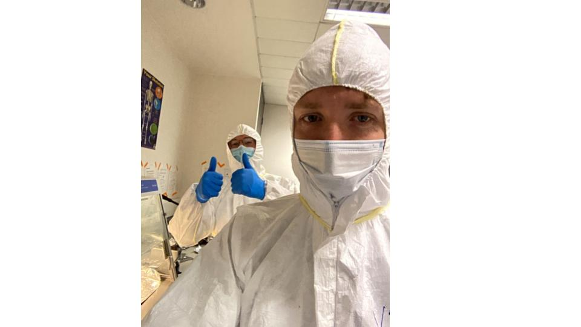
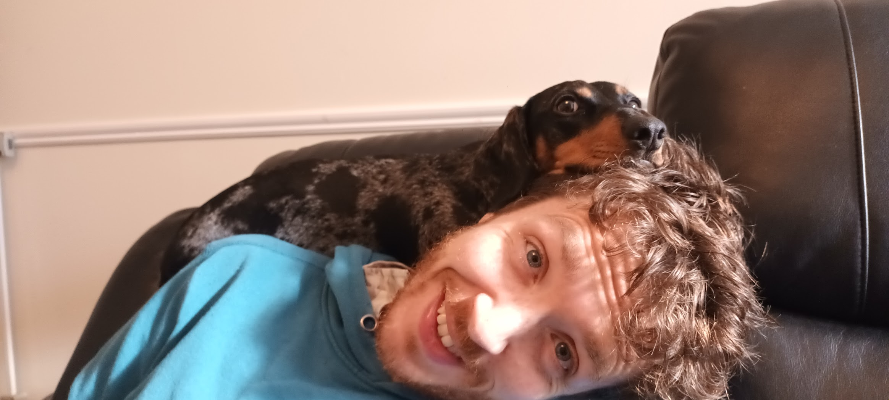
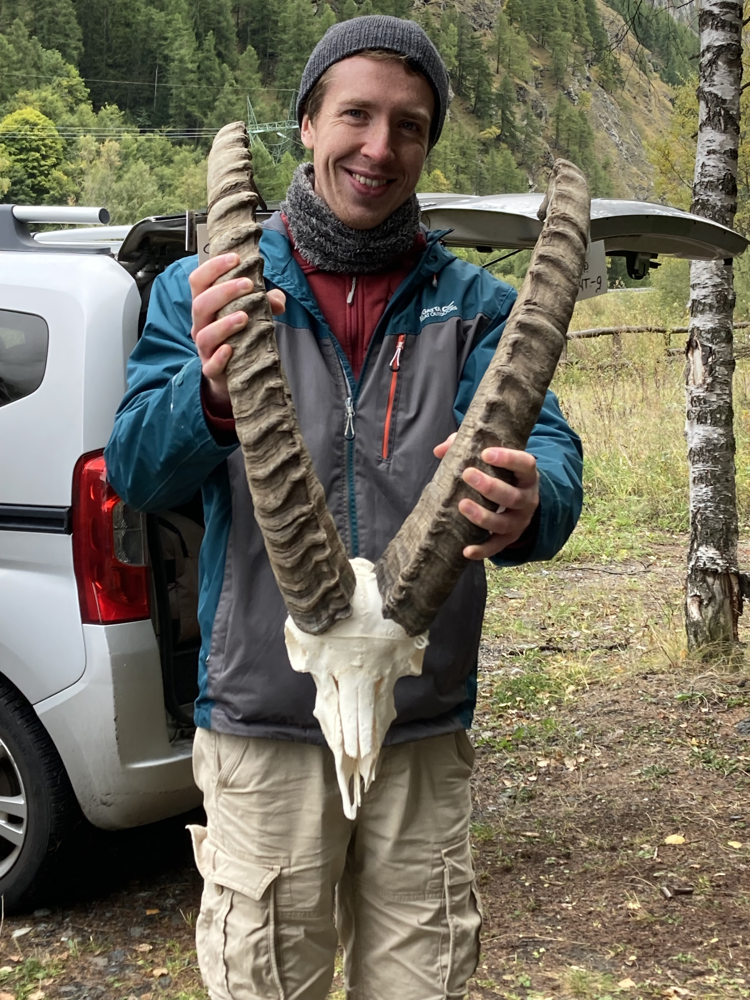
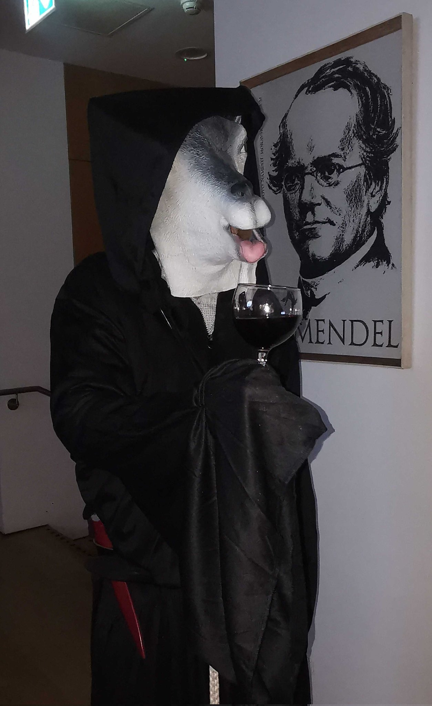
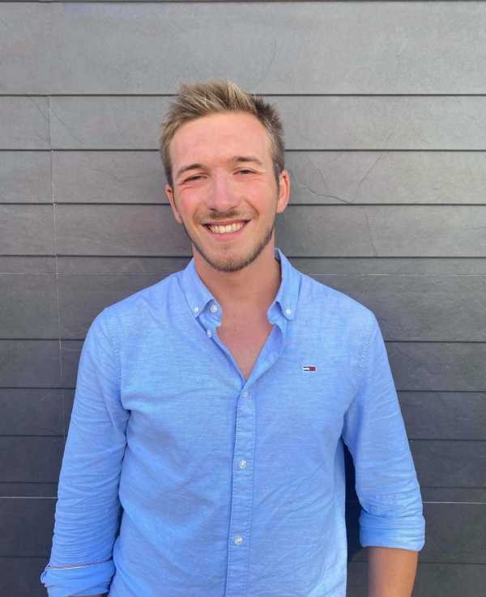
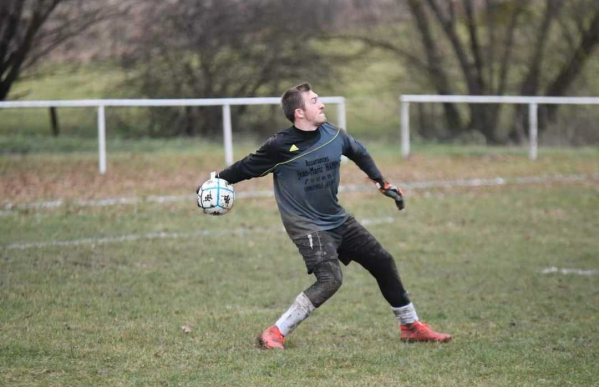
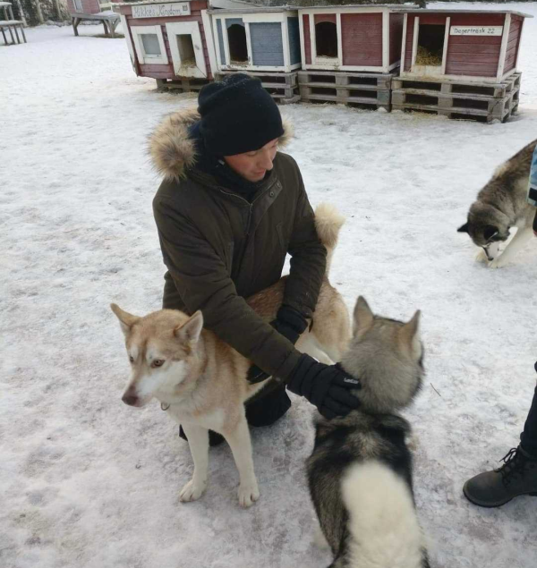

People

Group Leader: Kevin Daly
Hello!
I am an Ad Astra Fellow - Lecturer/Assistant Professor at UCD’s School of Agriculture and Food Science, where I will lead the self-styled “Ruminant Palaeogenomics” group.

A standard working from home day.
I completed my undergraduate at Trinity College Dublin, where I began my academic career under the mentorship of Prof. Daniel Bradley. As part of Dan’s ERC project “CODEX” I generated the first large scale genomic dataset of an ancient livestock, thus beginning my minor obsession and healthy research interest in goats.
Following my PhD I had the fortunate to collaborate with Dr. Melinda Zeder on material from Ganj Dareh, one of the earliest settlements with robust evidence for goat management. Expanding the dataset of goat remains with Dr. Marjan Mashkour, Dr. Pernille Bangsgaard, and Dr. Lisa Yeoman, we created a multi-disciplinary collaboration on the world’s old managed goat herds, producing a study I am very proud of.
I have also explored the genomics of ancient sheep, a species arguably more important than goats but perhaps less charismatic. See here for a sheep mummy genome, from a specimen we thought was initially goat, led by the peerless Dr. Conor Rossi.
More recently I have been awarded an SFI Pathways award to explore small ruminant pathogens in the earliest phases of livestock domestication.
I am a member of the first cohort of the Young Academy of Ireland, the least among an exceptional group of young researchers and leaders.
I am a proponent to alternative peer review publishing models, and have submitted manuscripts through the “Peer Community In” system. I look forward to doing so again and hope to support the movement in any way I can.
In my free time I watch films and maintain a list of the best goat roles in cinema. You won’t believe what’s at number one!
 
PhD Students
Louis L’Hôte
I am Louis, PhD student in ancient pathogen genetics.
After a undegraduate degree in life science i followed a Master in Engineering in Microbiology at the Faculté des sciences et technologies, Université de Lorraine. Throughout my master degree i got the chance to be part of different research project: In 2021 i worked ancient woolly mammoth microbiota at the Microbial Palaeogenomics Unit of the Pasteur institute in Paris.

This experience gave me the opportunity to learn a lot about metagenomics techniques and ancient DNA. It is why in 2022 i decided to do my master thesis in Copenhagen in the Centre for ExoLife Sciences (CELS) where i used metagenomics and metatranscriptomics techniques to understand how microbes are surviving in Mars-like extreme environment.
 
I am currently Kevin Daly’s PhD student and part of the SFI Pathways project “Herd Health” . Livestock animals were domesticated 10 000 years ago in southwest Asia, but little is known about their health (inbreeding, infectious disease) despite their underpinning of farmer societies .
In the last few years, the advancement of Next generation sequencing techniques has made it possible to reconstruct different genomes of ancient human pathogens from archaeological specimens, such as Yersinia pestis, the agent of the Black Death . So far, the reconstruction of pathogen genomes has mainly been performed on human pathogens . My work focuses on obtaining pathogen and animal DNA from 10,000 years old sheep and goat material, from the Zagros Mountain in Iran, in order to understand how sheep and goat zoonotic pathogen evolution was shaped by the onset of domestication .
I’m interested in everything to do with microbes. From ancient DNA to wet lab.